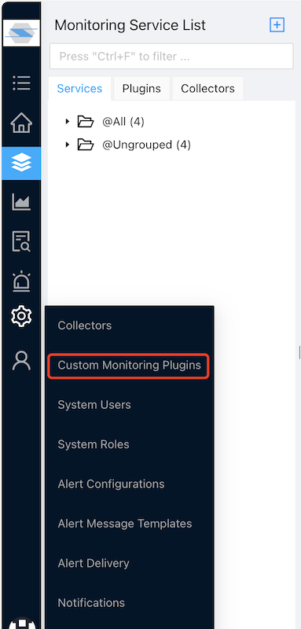
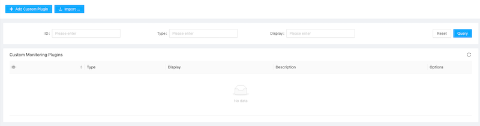
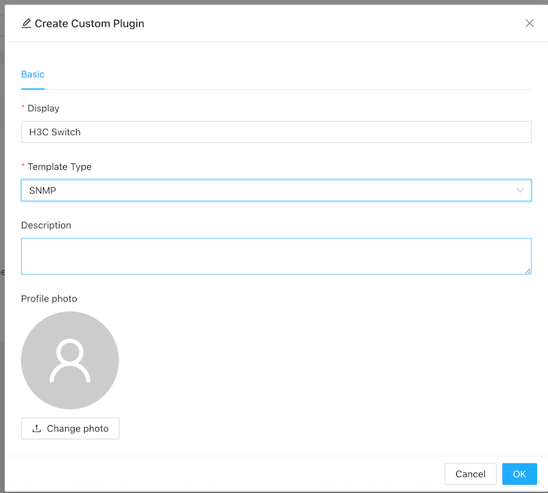
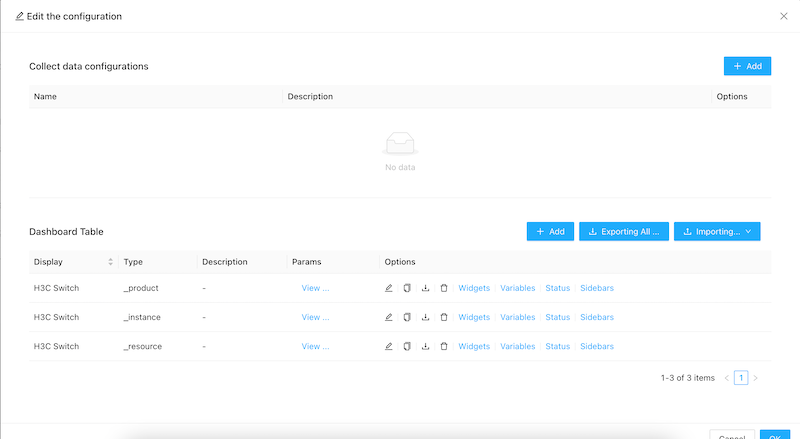
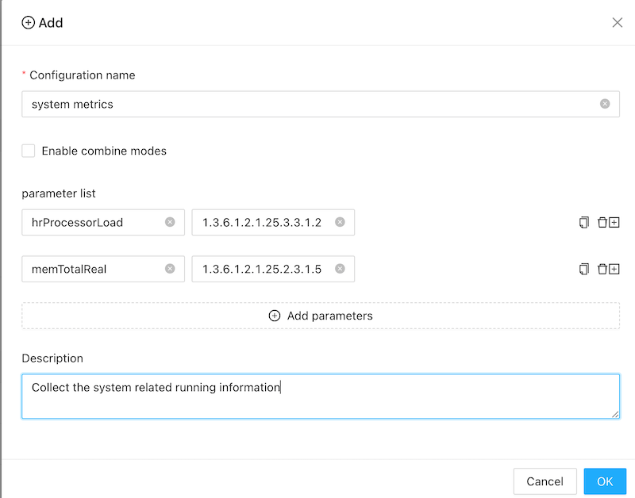
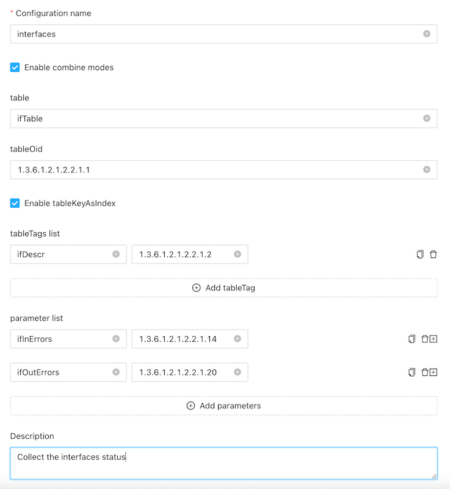
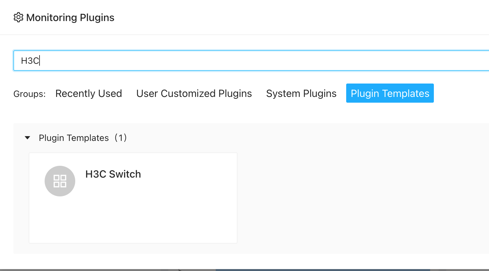
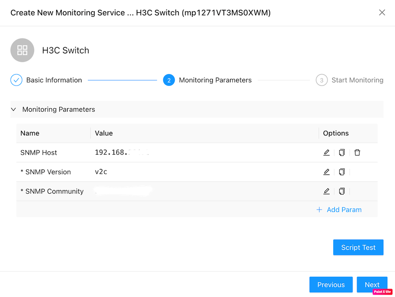

Monitor SNMP devices using custom templates
With zoomphant, you can monitor any snmp v1/v2c/v3 devices with customized snmp templates.
Create Custom SNMP Monitoring Plugin
The SNMP Template plugin will do snmpget/snmpwalk to an snmp agent to scrape data. From this template, you can create your first custom SNMP monitoring plugin easily.
| First, navigate to “Settings | Custom Monitoring Plugins” as shown below: |

Here you can manage all your custom plugins created from one of the template plugins as well as create new ones.

Click the “Add Custom Plugin” button on the top left corner, the Create Custom Plugin dialog will be brought up. Here you shall give your plugin a name and select the Template Type to SNMP.

Configure data collections
Step 1: Click the settings button for the snmp template, and now we need to configure the data collected.

Step 2: click the add button, and input the related information:

Configuration name: give a readable information
Enable combine modes: when it’s enable, you can access a table in SNMP. See below example.
Parameter list: you can add the metrics to do snmp get directly. in above example, it added two metrics:
hrProcessorLoad - 1.3.6.1.2.1.25.3.3.1.2 (OID) memTotalReal - 1.3.6.1.2.1.25.2.3.1.5 (OID)
For different devices, it provides different OIDs. Please contact your device provider for more details.
Combine Mode
This is used to do snmp walk of a table. eg you have some interfaces and want to get metrics for each interface:

For above configuration:
table: a readable name.
tableOid: the oid which will be walked. for the walk result, it will generate a map. For above example, when we do the snmpwalk all the interfaces in a linux vm: The oid is: 1.3.6.1.2.1.2.2.1.1.
[root ~]# snmpwalk -v 2c -c public 192.168.3.1 1.3.6.1.2.1.2.2.1.1 IF-MIB::ifIndex.1 = INTEGER: 1 IF-MIB::ifIndex.2 = INTEGER: 2 IF-MIB::ifIndex.3 = INTEGER: 3 IF-MIB::ifIndex.4 = INTEGER: 4 IF-MIB::ifIndex.5 = INTEGER: 5 IF-MIB::ifIndex.6 = INTEGER: 6 IF-MIB::ifIndex.7 = INTEGER: 7 IF-MIB::ifIndex.8 = INTEGER: 8 IF-MIB::ifIndex.9 = INTEGER: 9 IF-MIB::ifIndex.10 = INTEGER: 10 IF-MIB::ifIndex.11 = INTEGER: 11 IF-MIB::ifIndex.12 = INTEGER: 12 IF-MIB::ifIndex.13 = INTEGER: 13 IF-MIB::ifIndex.14 = INTEGER: 14 IF-MIB::ifIndex.131 = INTEGER: 131 IF-MIB::ifIndex.132 = INTEGER: 132 IF-MIB::ifIndex.133 = INTEGER: 133 IF-MIB::ifIndex.134 = INTEGER: 134 IF-MIB::ifIndex.135 = INTEGER: 135Enable tableKeyAsIndex: if enable, we will use the key eg:
ifIndex.6as the key6to compose the oid to query the metrics. If disable, we will use the valueINTEGER: 6to query the metrics. Some oids may generate different key and values. eg:[root ~]# snmpwalk -v 2c -c public 192.168.3.1 1.3.6.1.2.1.2.2.1.2 IF-MIB::ifDescr.1 = STRING: GigabitEthernet1/0/0 IF-MIB::ifDescr.2 = STRING: GigabitEthernet1/0/1 IF-MIB::ifDescr.3 = STRING: GigabitEthernet1/0/2 IF-MIB::ifDescr.4 = STRING: GigabitEthernet1/0/3 IF-MIB::ifDescr.5 = STRING: GigabitEthernet1/0/4 IF-MIB::ifDescr.6 = STRING: GigabitEthernet1/0/5 IF-MIB::ifDescr.7 = STRING: GigabitEthernet1/0/6 IF-MIB::ifDescr.8 = STRING: GigabitEthernet1/0/7 IF-MIB::ifDescr.9 = STRING: GigabitEthernet1/0/8 IF-MIB::ifDescr.10 = STRING: GigabitEthernet1/0/9 IF-MIB::ifDescr.11 = STRING: GigabitEthernet1/0/10 IF-MIB::ifDescr.12 = STRING: GigabitEthernet1/0/11 IF-MIB::ifDescr.13 = STRING: Cellular1/0/0 IF-MIB::ifDescr.14 = STRING: Cellular1/0/1 IF-MIB::ifDescr.131 = STRING: NULL0 IF-MIB::ifDescr.132 = STRING: InLoopBack0 IF-MIB::ifDescr.133 = STRING: Register-Tunnel0 IF-MIB::ifDescr.134 = STRING: SSLVPN-AC2 IF-MIB::ifDescr.135 = STRING: SSLVPN-AC1Here you can see, the key is still
ifDescr.6as the key6while the value is a STRINGGigabitEthernet1/0/5.- Table tags list: you can use this to differ different table records. Here we use
1.3.6.1.2.1.2.2.1.2to generate a tagifDescr(the interface description). - Parameter list: here we will collect the
ifInErrors(1.3.6.1.2.1.2.2.1.14) andifOutErrors(1.3.6.1.2.1.2.2.1.20).
Add snmp monitoring service
Using custom snmp plugin is very simple. When creating service , just select your custom snmp plugin:

and please enter the correct credentials:

- For snmp v1/v2c, please set the community. For snmp v3, more credentials required.
Now, you can add a dashboard to see metrics interested in. please refer to dashboards to create a dashboard.